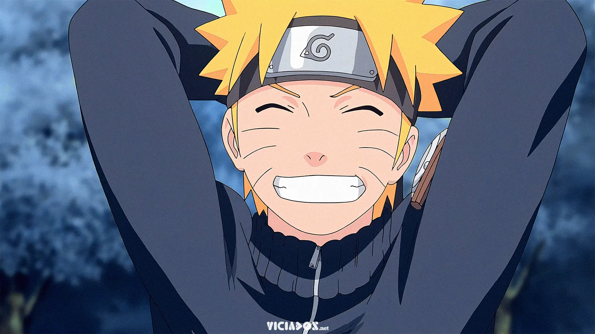

asta
meliodas

naruto

asta
meliodas
naruto
é um órfão que foi deixado sob os cuidados de uma igreja na vila de Hage, hoje, ele é o portador do grimório negro de cinco folhas e membro do Black Bull, mesmo sendo a única pessoa do mundo a não possuir magia, ainda almeja se tornar o grande mago imperador.
é o líder dos Sete Pecados Capitais e atual Rei de Liones,, carregando o título de Pecado da Ira do Dragão. Ele é o proprietário do renomado bar Chapéu de Javali. O seu Tesouro Sagrado é a Espada Demônio Lostvayne e seu poder é o Full Counter. Ele também já foi o portador do Mandamento do Amor e é o antigo líder dos Dez Mandamentos, um antigo membro do Stigma, e o filho mais velho do Rei Demônio.
é um shinobi de Konohagakure do clã Uzumaki e protagonista homônimo da franquia Naruto. Desde seu nascimento, ele se tornou jinchūriki das Nove-Caudas, um destino que o levou a ser condenado e negligenciado por toda a aldeia durante sua infância. Depois de entrar para o Time 7, ao lado de Sakura Haruno, Sasuke Uchiha e sob comando de Kakashi Hatake, Naruto trabalhou duro para ganhar o respeito e o reconhecimento da aldeia, com o sonho de se tornar Hokage.